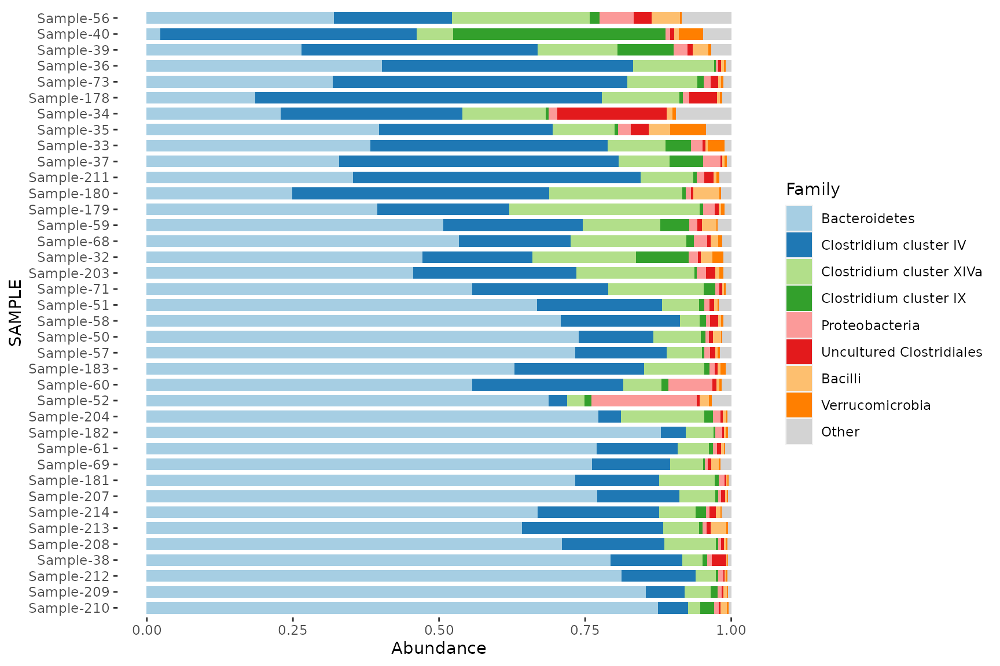
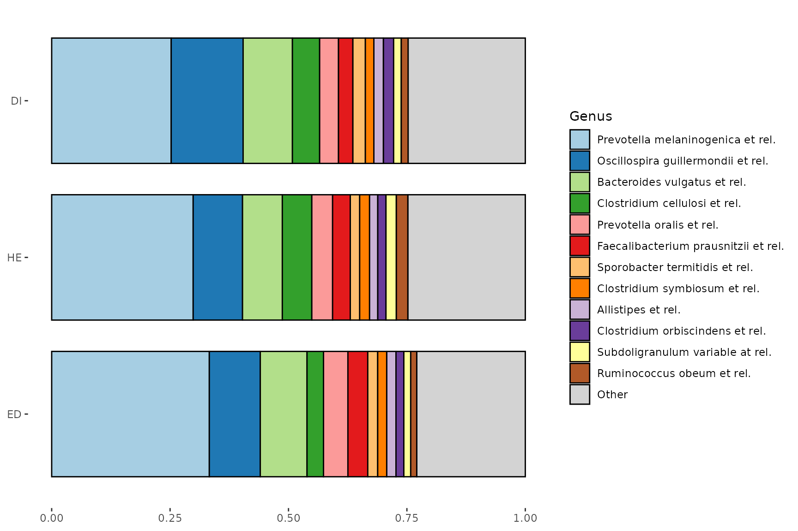
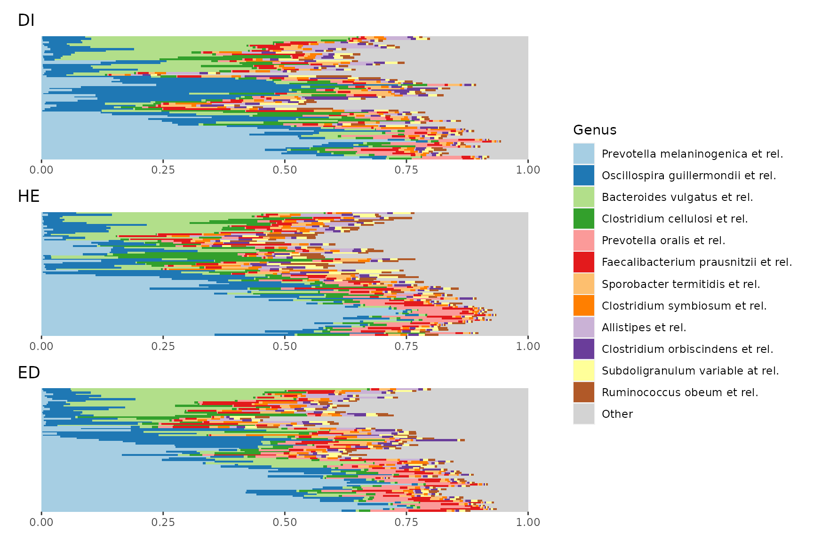
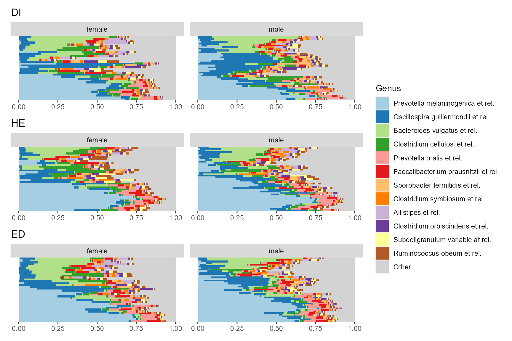
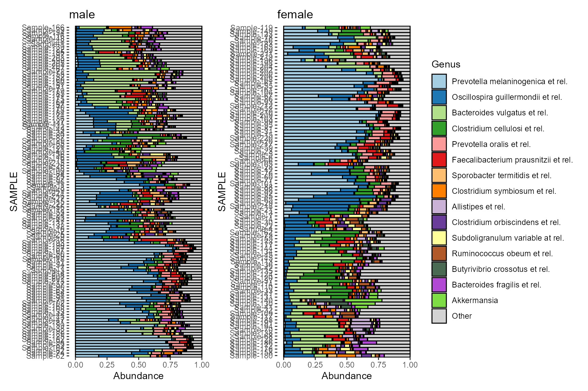

vignettes/Visualising-compositions.Rmd
Visualising-compositions.Rmd
options(width = 100)
library(microViz)
library(phyloseq)
library(microbiome)
library(patchwork) # for arranging groups of plots
data(dietswap)
knitr::opts_chunk$set(
fig.height = 6,
fig.width = 9
)The plot_comp_bar function allows you to visualise the taxonomic compositions of your microbiome samples in a flexible, scalable, group-able, and visually appealing way.
dietswap %>%
phyloseq::subset_samples(timepoint == 1) %>%
plot_comp_bar(
tax_level = "Family", n_taxa = 8,
bar_outline_colour = NA,
sample_order = "bray", bar_width = 0.7
) + coord_flip()
#> Registered S3 method overwritten by 'seriation':
#> method from
#> reorder.hclust vegan
Often to compare groups, average compositions are presented.
p1 <- dietswap %>%
phyloseq::merge_samples(group = "group") %>%
plot_comp_bar(
tax_level = "Genus", n_taxa = 12,
sample_order = c("ED", "HE", "DI"),
bar_width = 0.8
) +
coord_flip() + labs(x = NULL, y = NULL)
#> Warning in asMethod(object): NAs introduced by coercion
p1
However that “group-averaging” approach hides a lot of within-group variation.
p2 <- dietswap %>%
plot_comp_bar(
tax_level = "Genus", n_taxa = 12, groups = "group",
sample_order = "euclidean", bar_outline_colour = NA
) %>%
patchwork::wrap_plots(nrow = 3, guides = "collect") &
coord_flip() &
labs(x = NULL, y = NULL) &
theme(axis.text.y = element_blank(),
axis.ticks.y = element_blank())
p2
Only from p2 you can see that the apparently higher average relative abundance of Oscillospira in group DI is probably driven largely by a subgroup of DI samples with relatively high Oscillospira.
Make a list of 2 harmonised composition plots grouped by sex.
plot_list <- plot_comp_bar(
dietswap,
n_taxa = 15, tax_level = "Genus",
bar_outline_colour = "black",
sample_order = "aitchison", groups = "sex"
)Plot them side by side with the patchwork package.
patch <- patchwork::wrap_plots(plot_list, ncol = 2, guides = "collect")
patch & coord_flip() # make bars in all plots horizontal (note: use & instead of +)
Modify one plot in place (flip the order of the samples in the 2nd plot). Notice that the scaling is for the x-axis. That’s because coord_flip is used afterwards when displaying the plots
patch[[2]] <- patch[[2]] + scale_x_discrete(limits = rev)
#> Scale for 'x' is already present. Adding another scale for 'x', which will replace the existing
#> scale.
# Explainer: rev() function takes current axis limits and reverses them.
# You could also pass a completely arbitrary order to limits, naming all samples.Notice how you can theme all plots with the & operator.
See https://patchwork.data-imaginist.com/index.html for more examples of arranging multiple plots.
patch &
coord_flip() & labs(x = NULL, y = NULL) &
theme(axis.text.y = element_text(size = 5),
legend.text = element_text(size = 8)) &
plot_annotation(
title = "Comparing microbial composition across sexes",
caption = "Caption: patchwork is a great package!",
theme = theme(plot.title = element_text(size = 16, face = 'bold'))
)
devtools::session_info()
#> - Session info -----------------------------------------------------------------------------------
#> setting value
#> version R version 4.0.3 (2020-10-10)
#> os Windows 10 x64
#> system x86_64, mingw32
#> ui RTerm
#> language (EN)
#> collate English_United Kingdom.1252
#> ctype English_United Kingdom.1252
#> tz Europe/London
#> date 2020-11-24
#>
#> - Packages ---------------------------------------------------------------------------------------
#> package * version date lib source
#> ade4 1.7-16 2020-10-28 [3] CRAN (R 4.0.3)
#> ape 5.4-1 2020-08-13 [3] CRAN (R 4.0.3)
#> assertthat 0.2.1 2019-03-21 [3] CRAN (R 4.0.0)
#> Biobase 2.48.0 2020-04-27 [3] Bioconductor
#> BiocGenerics 0.34.0 2020-04-27 [3] Bioconductor
#> biomformat 1.16.0 2020-04-27 [3] Bioconductor
#> Biostrings 2.56.0 2020-04-27 [3] Bioconductor
#> callr 3.5.1 2020-10-13 [3] CRAN (R 4.0.3)
#> cli 2.1.0 2020-10-12 [3] CRAN (R 4.0.3)
#> cluster 2.1.0 2019-06-19 [3] CRAN (R 4.0.3)
#> codetools 0.2-18 2020-11-04 [3] CRAN (R 4.0.3)
#> colorspace 2.0-0 2020-11-11 [3] CRAN (R 4.0.3)
#> crayon 1.3.4 2017-09-16 [3] CRAN (R 4.0.0)
#> data.table 1.13.2 2020-10-19 [3] CRAN (R 4.0.3)
#> desc 1.2.0 2018-05-01 [3] CRAN (R 4.0.0)
#> devtools 2.3.2 2020-09-18 [3] CRAN (R 4.0.3)
#> digest 0.6.27 2020-10-24 [3] CRAN (R 4.0.3)
#> dplyr 1.0.2 2020-08-18 [3] CRAN (R 4.0.2)
#> ellipsis 0.3.1 2020-05-15 [3] CRAN (R 4.0.0)
#> evaluate 0.14 2019-05-28 [3] CRAN (R 4.0.0)
#> fansi 0.4.1 2020-01-08 [3] CRAN (R 4.0.0)
#> farver 2.0.3 2020-01-16 [3] CRAN (R 4.0.0)
#> foreach 1.5.1 2020-10-15 [3] CRAN (R 4.0.3)
#> fs 1.5.0 2020-07-31 [3] CRAN (R 4.0.2)
#> generics 0.1.0 2020-10-31 [3] CRAN (R 4.0.3)
#> ggplot2 * 3.3.2 2020-06-19 [3] CRAN (R 4.0.2)
#> glue 1.4.2 2020-08-27 [3] CRAN (R 4.0.2)
#> gtable 0.3.0 2019-03-25 [3] CRAN (R 4.0.0)
#> hms 0.5.3 2020-01-08 [3] CRAN (R 4.0.0)
#> htmltools 0.5.0 2020-06-16 [3] CRAN (R 4.0.2)
#> igraph 1.2.6 2020-10-06 [3] CRAN (R 4.0.3)
#> IRanges 2.22.2 2020-05-21 [3] Bioconductor
#> iterators 1.0.13 2020-10-15 [3] CRAN (R 4.0.3)
#> jsonlite 1.7.1 2020-09-07 [3] CRAN (R 4.0.3)
#> knitr 1.30 2020-09-22 [3] CRAN (R 4.0.2)
#> labeling 0.4.2 2020-10-20 [3] CRAN (R 4.0.3)
#> lattice 0.20-41 2020-04-02 [3] CRAN (R 4.0.3)
#> lifecycle 0.2.0 2020-03-06 [3] CRAN (R 4.0.0)
#> magrittr 2.0.1 2020-11-17 [3] CRAN (R 4.0.3)
#> MASS 7.3-53 2020-09-09 [3] CRAN (R 4.0.3)
#> Matrix 1.2-18 2019-11-27 [3] CRAN (R 4.0.3)
#> memoise 1.1.0 2017-04-21 [3] CRAN (R 4.0.0)
#> mgcv 1.8-33 2020-08-27 [3] CRAN (R 4.0.3)
#> microbiome * 1.10.0 2020-04-27 [3] Bioconductor
#> microViz * 0.0.1 2020-11-24 [2] local
#> multtest 2.44.0 2020-04-27 [3] Bioconductor
#> munsell 0.5.0 2018-06-12 [3] CRAN (R 4.0.0)
#> nlme 3.1-150 2020-10-24 [3] CRAN (R 4.0.3)
#> patchwork * 1.1.0 2020-11-09 [3] CRAN (R 4.0.1)
#> permute 0.9-5 2019-03-12 [3] CRAN (R 4.0.0)
#> phyloseq * 1.32.0 2020-04-27 [3] Bioconductor
#> pillar 1.4.7 2020-11-20 [3] CRAN (R 4.0.3)
#> pkgbuild 1.1.0 2020-07-13 [3] CRAN (R 4.0.2)
#> pkgconfig 2.0.3 2019-09-22 [3] CRAN (R 4.0.0)
#> pkgdown 1.6.1 2020-09-12 [3] CRAN (R 4.0.3)
#> pkgload 1.1.0 2020-05-29 [3] CRAN (R 4.0.0)
#> plyr 1.8.6 2020-03-03 [3] CRAN (R 4.0.0)
#> prettyunits 1.1.1 2020-01-24 [3] CRAN (R 4.0.0)
#> processx 3.4.4 2020-09-03 [3] CRAN (R 4.0.3)
#> progress 1.2.2 2019-05-16 [3] CRAN (R 4.0.0)
#> ps 1.4.0 2020-10-07 [3] CRAN (R 4.0.3)
#> purrr 0.3.4 2020-04-17 [3] CRAN (R 4.0.0)
#> R6 2.5.0 2020-10-28 [3] CRAN (R 4.0.1)
#> ragg 0.4.0 2020-10-05 [3] CRAN (R 4.0.3)
#> RColorBrewer 1.1-2 2014-12-07 [3] CRAN (R 4.0.0)
#> Rcpp 1.0.5 2020-07-06 [3] CRAN (R 4.0.3)
#> registry 0.5-1 2019-03-05 [3] CRAN (R 4.0.0)
#> remotes 2.2.0 2020-07-21 [3] CRAN (R 4.0.3)
#> reshape2 1.4.4 2020-04-09 [3] CRAN (R 4.0.0)
#> rhdf5 2.32.4 2020-10-05 [3] Bioconductor
#> Rhdf5lib 1.10.1 2020-07-09 [3] Bioconductor
#> rlang 0.4.8 2020-10-08 [3] CRAN (R 4.0.3)
#> rmarkdown 2.5 2020-10-21 [3] CRAN (R 4.0.3)
#> rprojroot 2.0.2 2020-11-15 [3] CRAN (R 4.0.3)
#> rstudioapi 0.13 2020-11-12 [3] CRAN (R 4.0.3)
#> Rtsne 0.15 2018-11-10 [3] CRAN (R 4.0.2)
#> S4Vectors 0.26.1 2020-05-16 [3] Bioconductor
#> scales 1.1.1 2020-05-11 [3] CRAN (R 4.0.0)
#> seriation 1.2-9 2020-10-01 [3] CRAN (R 4.0.3)
#> sessioninfo 1.1.1 2018-11-05 [3] CRAN (R 4.0.0)
#> stringi 1.5.3 2020-09-09 [3] CRAN (R 4.0.3)
#> stringr 1.4.0 2019-02-10 [3] CRAN (R 4.0.0)
#> survival 3.2-7 2020-09-28 [3] CRAN (R 4.0.3)
#> systemfonts 0.3.2 2020-09-29 [3] CRAN (R 4.0.3)
#> testthat 3.0.0 2020-10-31 [3] CRAN (R 4.0.3)
#> textshaping 0.1.2 2020-10-08 [3] CRAN (R 4.0.3)
#> tibble 3.0.4 2020-10-12 [3] CRAN (R 4.0.3)
#> tidyr 1.1.2 2020-08-27 [3] CRAN (R 4.0.3)
#> tidyselect 1.1.0 2020-05-11 [3] CRAN (R 4.0.0)
#> TSP 1.1-10 2020-04-17 [3] CRAN (R 4.0.3)
#> usethis 1.6.3 2020-09-17 [3] CRAN (R 4.0.3)
#> vctrs 0.3.5 2020-11-17 [3] CRAN (R 4.0.3)
#> vegan 2.5-6 2019-09-01 [3] CRAN (R 4.0.0)
#> withr 2.3.0 2020-09-22 [3] CRAN (R 4.0.2)
#> xfun 0.19 2020-10-30 [3] CRAN (R 4.0.3)
#> XVector 0.28.0 2020-04-27 [3] Bioconductor
#> yaml 2.2.1 2020-02-01 [3] CRAN (R 4.0.0)
#> zlibbioc 1.34.0 2020-04-27 [3] Bioconductor
#>
#> [1] C:/Users/david.barnett/AppData/Local/Temp/Rtmpu4oxWm/temp_libpath266440e9270d
#> [2] C:/Users/david.barnett/AppData/Local/Temp/Rtmpu4oxWm/temp_libpath266430134dad
#> [3] C:/Program Files/R/R-4.0.3/library